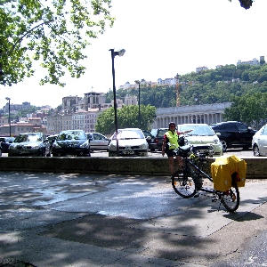
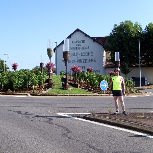
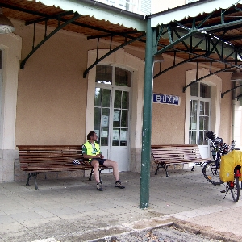
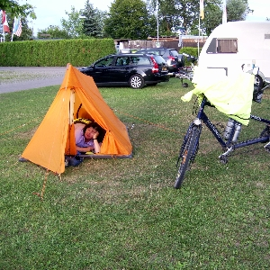
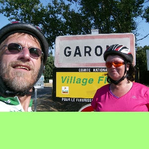
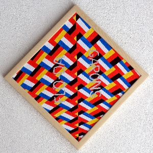

|




 |
Ein Traum
wurde wahr
Eine Tandemfahrt nach Garons
Wir fahren seit einigen Jahren Tandem und haben schon
etliche km hinter uns gebracht. Auch eine Fahrt nach
Bodelsberg im Allgäu war eine schöne Herausforderung.
Nun reifte aber die Idee, in unsere, damals noch zukünftige,
Partnergemeinde Garons zu radeln.
Zuerst war es ein ferner Traum, doch plötzlich schien sich
alles zu fügen. Unsere Urlaubsplanung wurde zur
Radtourenplanung. Wir suchten eine geeignete
Streckenführung, besorgten extra leichte und kleine
Schlafsäcke, Luftmatratzen, ein entsprechendes Zelt sowie
die üblichen Reiseutensilien. Das Tandem wurde für die Reise
vorbereitet und wir mußten noch die Rückreise organisieren.
Der Zufall wollte es, daß Verwandte in der gleichen Zeit
nach Frankreich wollten und unser Auto mitnehmen konnten.
Also war alles vorbereitet und am 2.7.2011 ging es los.
Zuerst fuhren wir in bekanntem Gebiet Richtung Rheinzabern,
wo wir Mittagessen gingen. Wir wußten aus Erfahrung, daß wir
viel Energie zuführen müssen. Es ging dann weiter nach
Lauterbourg und bei Rastatt über den Rhein, um in Stollhofen
auf dem Campinplatz zu schlafen. Nach dem Frühstück ging es
dann an Kehl vorbei und wir fanden ein schönes Lokal für
unsere Energiezufuhr. Nach dem Essen fuhren wir wieder über
den Rhein nach Frankreich und Fluß aufwärts über Fahrradwege
und Straßen bis nach Neuf-Brisach, wo wir auf der Ile du
Rhin im Zelt übernachteten.
Der neue Tag sollte anstrengend werden. Es ging Richtung
Mühlhausen mit Mittagessen in Wittelsheim und schwieriger
Routenfindung. Es mußten einige z.T. knackige Steigungen bis
Ronchamp gemeistert werden. Nach der Übernachtung in
Champagney mußten wir wegen des starken Verkehrs die
geplante Strecke verlassen, um bei Vesoul etwas den
Überblick zu verlieren, aber beim Mittagessen halfen uns
Einheimische weiter. Es war sehr heiß, so daß wir bald
unsere Trinkflaschen leer hatten, konnten aber in einer Kita
wieder nachfüllen. Die Übernachtung in dem kleinen Ort
Marnay war angenehm und nach einem gemütlichen Frühstück
ging es Richtung Saone. Auf einem sehr schönen Campingplatz
in Chalon sur Saone merkten wir, daß eine Speiche gebrochen
war. Morgens konnten wir das gleich reparieren lassen und
einen Abstecher über einen wunderschönen Radweg von Buxy
über Cluny, durch den längsten Fahrradtunnel Europas nach
Macon machen. Da es sehr nach Regen aussah, entschlossen wir
uns in einem Hotel zu nächtigen, was sich als die richtige
Entscheidung herausstellte, denn in der Nacht schüttete es
heftig. Nach einem üppigen Frühstück fuhren wir an der Saone
entlang Richtung Lyon, das wir dann nach dem Mittagessen
erreichten. Die Fahrt durch Lyon gestaltete sich einfacher
als gedacht, nur einmal mußten wir das Tandem um eine
Betonabsperrung herumwuchten. Später war noch die
Hinterradbremse zu erneuern. Südlich von Vienne kamen wir
kurz auf eine 4-spurige Straße und dann in ein schönes Hotel
mit Abendprogramm. Nachdem wir uns beim Frühstück gut
gestärkt hatten, fuhren wir an der Rhone entlang, um in
Tournon sur Rhone, einem unserer Lieblingsorte, zu essen.
Danach gings weiter die Rhone abwärts auf den Campingplatz
bei Cruas. Morgens auf zur letzten Etappe. Gut gelaunt
weiter der Rhone nach und dann Richtung Pont du Gard, wo wir
in einem Restaurant, das wir schon kannten, super essen
waren. Wir wußten auch, daß uns ein langer Anstieg erwartete
und freuten uns auf die dann kommende lange Abfahrt. Also
dann los. Beim Anstieg hörten wir dann ab und zu ein leises
Pling- und ahnten nichts Gutes, was sich auf der Höhe auch
bestätigte. 5 Speichen waren gebrochen, von einer schönen
schnellen Abfahrt konnten wir uns verabschieden. Priorität,
ca. 20 km vor Garons, war nur noch Ankommen. Also langsam
und vorsichtig fahren. Auf dem letzten Teilstück erwartete
uns überraschend nicht nur ein heftiger Anstieg, sondern
auch noch heftiger Gegenwind. Aber wir schafften es und
kamen Sonntag, den 10.7.2011 gegen 18.00 Uhr nach 50 Stunden
und 47 Minuten reiner Fahrzeit und 1071 km in Garons an. Wir
wurden von Maria und Helmut mit unserem Auto empfangen. Es
gab aber kein offenes Lokal, also keine Feier. Die beiden
brachten uns, zu unserer großen Überraschung in einen
Privatgarten, wo uns der Bürgermeister mit Teilen des
Partnerschaftskomitees empfing. Zufällig hatten diese gerade
eine Gartenparty.
Es war eine tolle Reise und ein beeindruckendes Erlebnis, es
geschafft zu haben.

Das
Originalbild wurde beim Besuch 2013 in Garons dem
Partnerschaftskomitee überreicht.
Das Bild symbolisiert die Partnerschaft zwischen Garons und
Flörsheim-Dalsheim durch die Verflechtung der Landesflaggen,
bleu-blanc-rouge / schwarz-rot-gold.
|